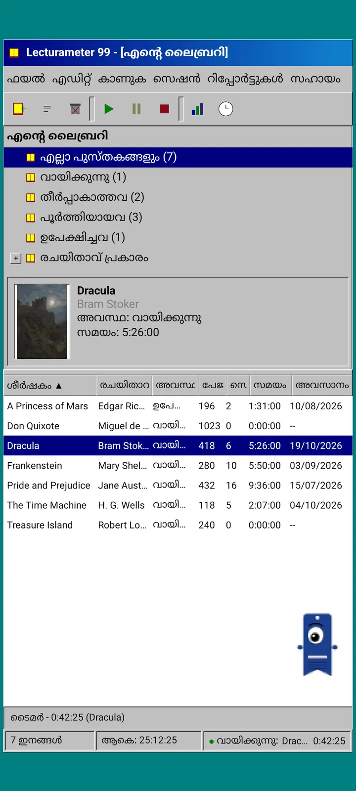
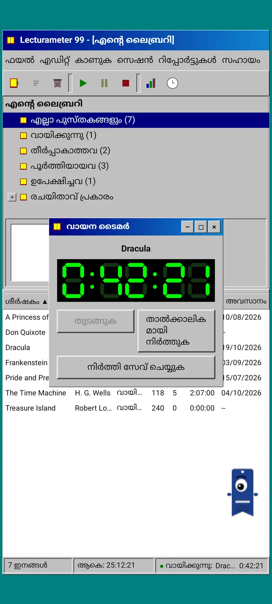
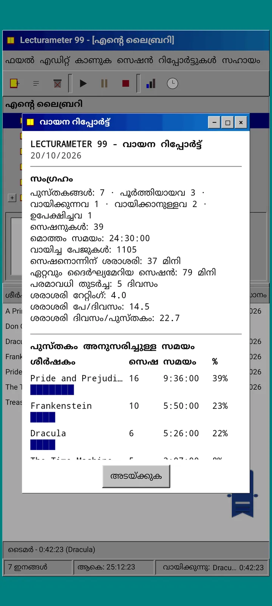
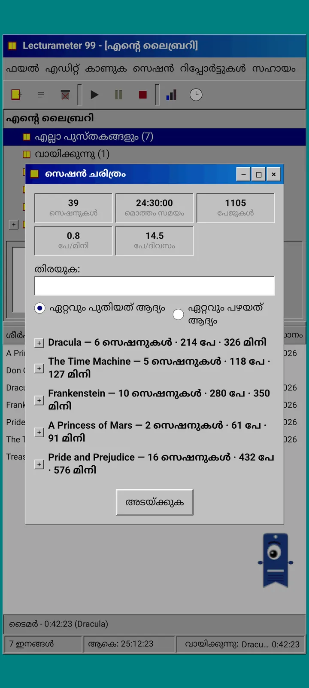
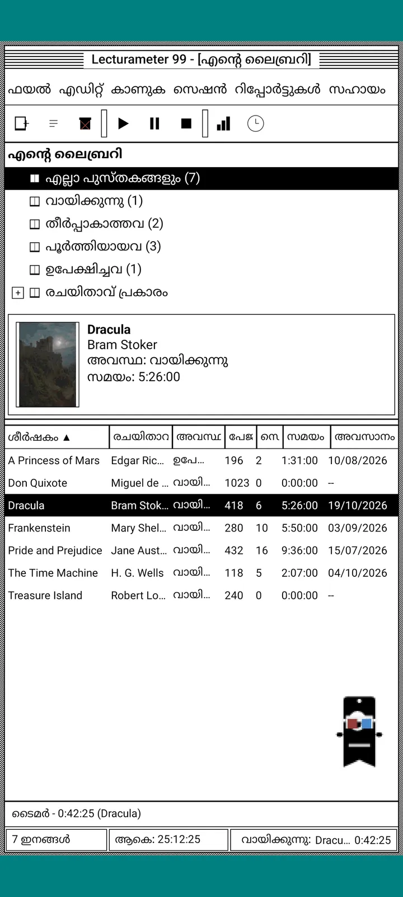
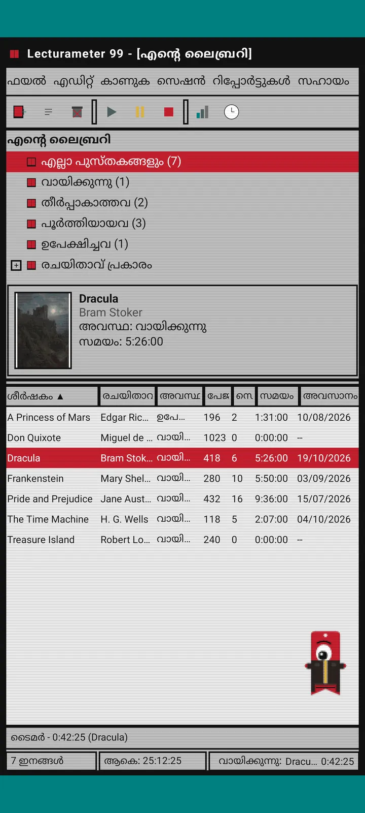
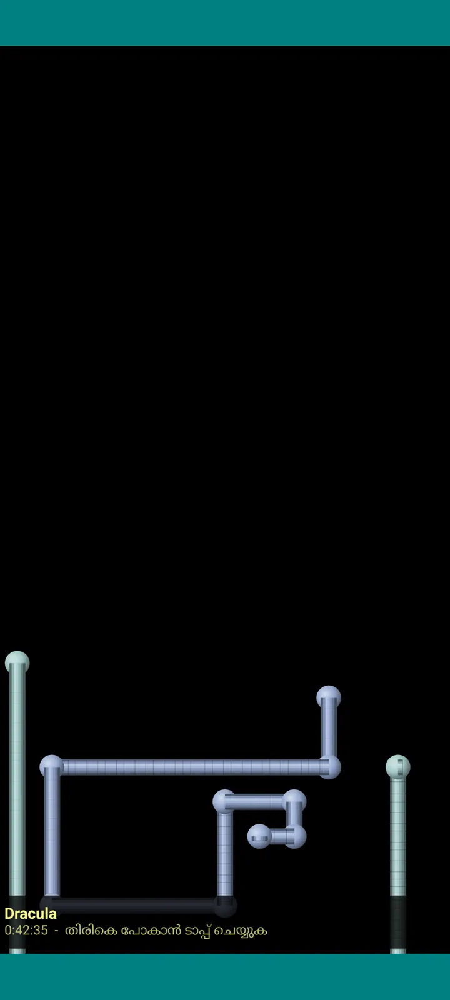

Lecturameter 1999
1999-ൽ ഒരു CD-ROM-ൽ നിന്ന് ഇൻസ്റ്റാൾ ചെയ്തതുപോലെ Lecturameter. വിൻഡോകളും മെനുകളും പട്ടികകളുമുള്ള, നിങ്ങളുടെ യഥാർത്ഥ ബാക്കപ്പുകൾ തുറക്കുന്ന ആപ്പിന്റെ ഒരു ബദൽ ക്ലയന്റ്.

ഇതെന്താണ്
നിങ്ങളുടെ ഫോണിൽ പ്രവർത്തിക്കുന്ന തൊണ്ണൂറുകളുടെ അവസാനത്തെ ഒരു ഡെസ്ക്ടോപ്പ് പ്രോഗ്രാം. ടീൽ നിറമുള്ള ഡെസ്ക്ടോപ്പിനു മുകളിൽ ഒരു വിൻഡോ, മെനു ബാർ, ടൂൾബാർ, ഫോൾഡർ ട്രീ, ഇടതൂർന്ന പട്ടിക, സ്റ്റാറ്റസ് ബാർ.
- ലൈബ്രറി ട്രീ: എല്ലാ പുസ്തകങ്ങൾ, വായിക്കുന്നു, തീർപ്പാകാത്തവ, പൂർത്തിയായവ, ഉപേക്ഷിച്ചത്, രചയിതാവ് അനുസരിച്ച്
- തലക്കെട്ട്, രചയിതാവ്, നില, പേജുകൾ, സെഷനുകൾ, സമയം, അവസാനം വായിച്ചത് എന്നിവയുള്ള പട്ടിക. ക്രമീകരിക്കാൻ ഒരു കോളം തലക്കെട്ടിൽ ടാപ്പ് ചെയ്യൂ
- Lecturameter ഉപയോഗിക്കുന്ന അതേ കാറ്റലോഗ് ഉപയോഗിച്ചുള്ള യഥാർത്ഥ പുസ്തക തിരയൽ
- Lecturameter ബാക്കപ്പും Goodreads CSV-യും ഇറക്കുമതി ചെയ്യുകയും എക്സ്പോർട്ട് ചെയ്യുകയും ചെയ്യുന്നു. ഒന്നും നഷ്ടപ്പെടാതെ നിങ്ങളുടെ ഡാറ്റ അകത്തേക്കും പുറത്തേക്കും പോകുന്നു

എന്തിനാണ് ഇത് ഉള്ളത്
ഒരു പരീക്ഷണം: യഥാർത്ഥ ആപ്പിൽ തൊടാതെ, തികച്ചും വ്യത്യസ്തമായ ഡിസൈൻ ആശയങ്ങളിൽ നിന്ന് Lecturameter-ന്റെ ആശയം ആദ്യം മുതൽ പുനർനിർമ്മിക്കുക. എല്ലാ പുനർവ്യാഖ്യാനങ്ങളിലും എനിക്ക് ഏറ്റവുമധികം ഇഷ്ടപ്പെട്ടത് 1999-ലേതാണ്, അതിനാൽ രസകരമായ ഒരു അഭ്യാസമായി ഞാൻ അത് പൂർത്തിയാക്കി ഒരു സമ്പൂർണ്ണ ക്ലയന്റാക്കി മാറ്റി. ഇത് മനഃപൂർവം Lecturameter-നേക്കാൾ ലളിതമാണ്: ഇതൊരു പരീക്ഷണമാണ്, തത്വത്തിൽ ഇതിനിനി കൂടുതൽ വികസനം ഉണ്ടാകില്ല.
- പച്ച LCD ഡിസ്പ്ലേയുള്ള ഫ്ലോട്ടിങ് വിൻഡോയിൽ ടൈമർ. അത് നീക്കാം, ടാസ്ക്ബാറിലേക്ക് ചെറുതാക്കാം, സ്റ്റാറ്റസ് ബാറിൽ എണ്ണൽ തുടരും
- നിർത്തുമ്പോൾ, സെഷൻ സേവ് ചെയ്യുക ഡയലോഗ് നിങ്ങളുടെ പേജുകൾ ചോദിക്കുകയും Lecturameter-ലേതു പോലെ നിങ്ങളുടെ വേഗത കണക്കാക്കുകയും ചെയ്യുന്നു
- സേവ് ചെയ്ത സെഷനുകൾ Lecturameter സെഷനുകൾ തന്നെയാണ്: Lecturameter 1999 ബാക്കപ്പ് എക്സ്പോർട്ട് ചെയ്ത് Lecturameter-ൽ ഇറക്കുമതി ചെയ്താൽ അവ പുതിയ ആപ്പിലേക്ക് തിരിച്ചെത്തും.

വായനാ റിപ്പോർട്ട്
സ്ഥിതിവിവരക്കണക്കുകൾ ഒരു അച്ചടിച്ച റിപ്പോർട്ടാണ്: സംഗ്രഹം, ബ്ലോക്ക് ബാറുകളുള്ള ഓരോ പുസ്തകത്തിനും സമയം, ദിവസേനയുള്ള പേജുകളിൽ വേഗത, അക്ഷരങ്ങൾ കൊണ്ട് വരച്ച വർഷത്തിന്റെ കലണ്ടർ, കഴിഞ്ഞ ഏഴ് ദിവസം.

സെഷൻ ചരിത്രം
പ്ലസ്, മൈനസ് ചിഹ്നങ്ങളുള്ള ഒരു ട്രീയിൽ പുസ്തകം അനുസരിച്ച് ഗ്രൂപ്പ് ചെയ്ത സെഷനുകൾ, മുകളിൽ അഞ്ച് കണക്കുകൾ: സെഷനുകൾ, ആകെ സമയം, പേജുകൾ, മിനിറ്റിൽ പേജുകൾ, ദിവസേനയുള്ള പേജുകൾ.

സെഷൻ സേവ് ചെയ്യുക
തീയതി, മിനിറ്റ്, ആദ്യത്തെയും അവസാനത്തെയും പേജ്, അഭിപ്രായം. നിങ്ങൾ ടൈപ്പ് ചെയ്യുമ്പോൾ തന്നെ സംഗ്രഹം പേജുകളും വേഗതയും കണക്കാക്കുന്നു. അവസാന പേജിൽ എത്തിയാൽ, പുസ്തകം പൂർത്തിയാക്കിയോ എന്ന് ചോദിക്കും.

Pagi 99
പാഗിയും 1999-ലേക്ക് യാത്ര ചെയ്തു: അക്കാലത്തെ ഓഫീസ് അസിസ്റ്റന്റുകളെപ്പോലെ പിക്സലേറ്റഡ് ആയി സ്ക്രീനിൽ സ്വതന്ത്രമായി നിൽക്കുന്നു. അവനെ വലിച്ചുനീക്കാം, ടാപ്പ് ചെയ്താൽ ഒരു വാചകം പറയും, മഞ്ഞ ബലൂണുകളിൽ ടിപ്പുകൾ കാണിക്കും.
തീമുകൾ
Classic 98 സൗജന്യവും ഡിഫോൾട്ടുമാണ്. പാക്ക് ആറെണ്ണം കൂടി ചേർക്കുന്നു, ഓരോന്നിനും സ്വന്തം പശ്ചാത്തലവും സ്വന്തം ശബ്ദങ്ങളുമുണ്ട്.

കാഴ്ച മെനുവിൽ നിന്ന് തിരഞ്ഞെടുക്കൂ
കാഴ്ച, തീം... ഏഴ് തീമുകളുള്ള ഒരു വിൻഡോ തുറക്കുന്നു. മാറ്റം എല്ലാ വിൻഡോകളിലും ടൈമറിലും പാഗിയിലും ഒരേസമയം എത്തുന്നു.
- Classic 98, സൗജന്യവും ഡിഫോൾട്ടും: ചാരനിറമുള്ള വിൻഡോകൾ, നേവി നിറമുള്ള ടൈറ്റിൽ ബാറുകൾ, ടീൽ ഡെസ്ക്ടോപ്പ്
- തീം പാക്ക്: 1984, Gumdrop, Memory, Towers, Core, 8-bit
- ഓരോ തീമും സ്വന്തം ഡെസ്ക്ടോപ്പ് പശ്ചാത്തലവും, ടാപ്പുകൾക്കും വിൻഡോകൾക്കും ടൈമറിനുമുള്ള സ്വന്തം ശബ്ദങ്ങളും കൊണ്ടുവരുന്നു
- നിശബ്ദമായി വായിക്കുന്നെങ്കിൽ കാഴ്ച, തീം ശബ്ദങ്ങൾ ശബ്ദങ്ങൾ ഓഫ് ചെയ്യും

Classic 98
ചാരനിറമുള്ള വിൻഡോകൾ, നേവി നിറമുള്ള ടൈറ്റിൽ ബാറുകൾ, ടീൽ ഡെസ്ക്ടോപ്പ്. സൗജന്യം, ആപ്പ് തുറക്കുമ്പോൾ ഉപയോഗിക്കുന്നത് ഇതാണ്.

1984
ഡോട്ട് പാറ്റേണുകളും ചതുര വിൻഡോകളുമുള്ള വൺ-ബിറ്റ് കറുപ്പും വെളുപ്പും ഡെസ്ക്ടോപ്പ്.

Gumdrop
അർദ്ധസുതാര്യമായ നിറമുള്ള പ്ലാസ്റ്റിക്, വൃത്താകൃതിയിലുള്ള ബട്ടണുകൾ, പശ്ചാത്തലത്തിൽ വരകൾ.

Memory
ഇരുണ്ട നീല നിറങ്ങളിൽ, തൊണ്ണൂറുകളിലെ ഒരു ഡിസ്ക് കൺസോളിന്റെ മെനുകൾ.

Towers
തൊണ്ണൂറുകളിലെ മറ്റൊരു ഡിസ്ക് കൺസോൾ, രാത്രി നീലയും ഇളം നീല വരകളും.

Core
ഒരിക്കലും ഓഫ് ആകാത്ത സ്ക്രീൻ പോലെ, കറുപ്പും പച്ചയും നിറമുള്ള ഒരു കൺസോൾ.

8-bit
വലിയ പിക്സലുകൾ, കുറച്ച് നിറങ്ങൾ, ചതുരാകൃതിയിലുള്ള അക്ഷരങ്ങൾ.

പണം നൽകുംമുമ്പ് പരീക്ഷിച്ചുനോക്കൂ
ലോക്ക് ചെയ്ത ഒരു തീമിൽ ടാപ്പ് ചെയ്താൽ ആപ്പ് മുഴുവൻ അതിലേക്ക് മാറും. വാങ്ങാതെ അടച്ചാൽ മുമ്പത്തെ തീം തിരിച്ചുവരും.
സ്ക്രീൻസേവറുകൾ
ടൈമർ ഓടിക്കൊണ്ടിരിക്കുകയും നിങ്ങൾ ഫോണിൽ തൊടാതിരിക്കുകയും ചെയ്യുമ്പോൾ മാത്രമേ ഇവ വരൂ. 1, 3 അല്ലെങ്കിൽ 5 മിനിറ്റ് കാത്തിരിക്കും, അല്ലെങ്കിൽ ഒരിക്കലും വരില്ല. ഒറ്റ ടാപ്പ് നിങ്ങളെ തിരികെ കൊണ്ടുവരും, ടൈമർ എണ്ണൽ തുടരും.

പറക്കുന്ന പുസ്തകങ്ങൾ
കറുത്ത സ്ക്രീനിനു കുറുകെ പുസ്തകച്ചട്ടകൾ വീശിപ്പറക്കുന്ന പിക്സൽ പുസ്തകങ്ങൾ.

അക്ഷരപ്പാടം
നക്ഷത്രപ്പാടം പോലെ, പല ലിപികളിലെ അക്ഷരങ്ങൾ ഒഴുകിനീങ്ങുന്നു.

പേജ് പൈപ്പുകൾ
സ്ക്രീൻ നിറയുന്നതുവരെ സ്വയം വരച്ചുകൊണ്ടിരിക്കുന്ന പേജുകൾ കൊണ്ടുള്ള പൈപ്പുകൾ.

തുള്ളിച്ചാടുന്ന പാഗി
സ്ക്രീനിന്റെ അരികുകളിൽ തട്ടി തുള്ളിച്ചാടുന്ന പാഗി.

വായനാ ക്ലോക്ക്
സെഷൻ സമയം വലിയ LCD അക്കങ്ങളിൽ.

പാഗിയുടെ വേഷങ്ങൾ
പാഗി 99-ന് എട്ട് വേഷങ്ങൾ. കാഴ്ച, പാഗിയുടെ വേഷം... എന്നതിൽ നിങ്ങൾ അവ തിരഞ്ഞെടുക്കുന്നു, പണം നൽകുംമുമ്പ് ധരിപ്പിച്ചുനോക്കുകയും ചെയ്യാം.
- കാസറ്റ് പ്ലെയർ
- തിരിച്ചുവച്ച തൊപ്പി
- 3D കണ്ണട
- നിയോൺ സൺഗ്ലാസ്
- കയ്യിൽ ഫ്ലോപ്പി ഡിസ്ക്
- ലെതർ ജാക്കറ്റ്
- പോക്കറ്റ് പെറ്റ്
- കാർഡ്ബോർഡ് കിരീടം
സ്റ്റോർ
നിങ്ങളുടെ വായന രേഖപ്പെടുത്താൻ ആപ്പ് സൗജന്യവും പൂർണ്ണവുമാണ്. വാങ്ങാവുന്നവ അതിന്റെ രൂപം മാത്രമേ മാറ്റൂ.
സമയപരിധിയില്ലാതെ ആപ്പ് മുഴുവൻ.
- ലൈബ്രറി, തിരയൽ, ടൈമർ, സെഷനുകൾ
- വായനാ റിപ്പോർട്ടും സെഷൻ ചരിത്രവും
- Lecturameter ബാക്കപ്പും Goodreads CSV-യും, ഇറക്കുമതിയും എക്സ്പോർട്ടും
- Classic 98 തീമും പാഗി 99-ഉം
- അക്കൗണ്ടില്ല, പരസ്യങ്ങളില്ല
ഒറ്റത്തവണ പേയ്മെന്റുകൾ, സബ്സ്ക്രിപ്ഷനുകളില്ല.
- തീം പാക്ക്, €3.49: പശ്ചാത്തലവും ശബ്ദങ്ങളുമുള്ള 6 തീമുകൾ, കൂടാതെ സ്ക്രീൻസേവറുകളും
- സ്ക്രീൻസേവറുകൾ, €1.99: 5 സ്ക്രീൻസേവറുകൾ
- പാഗിയുടെ വേഷങ്ങൾ, €1.99: 8 വേഷങ്ങൾ
- മുഴുവൻ 1999, €4.49: തീമുകൾ, സ്ക്രീൻസേവറുകൾ, വേഷങ്ങൾ
സഹായം മെനുവിൽ ഓപ്ഷണൽ ടിപ്പുകൾ, എനിക്കൊരു കാപ്പി വാങ്ങിത്തരണമെന്നുണ്ടെങ്കിൽ.
പണം നൽകുംമുമ്പ് തീമുകളും വേഷങ്ങളും തത്സമയം പരീക്ഷിക്കാം. വാങ്ങാതെ അടച്ചാൽ നിങ്ങളുടെ പഴയത് തിരിച്ചുവരും.
Lecturameter-മായി താരതമ്യം ചെയ്താൽ എന്താണ് മാറുന്നത്
Lecturameter-ലേതു പോലെ
- ഒരേ ഡാറ്റ: പുസ്തകങ്ങൾ, സെഷനുകൾ, നിലകൾ, സ്കോറുകൾ, കുറിപ്പുകൾ. രണ്ട് ആപ്പുകളിലും ബാക്കപ്പ് ഫയൽ ഒന്നുതന്നെയാണ്.
- തലക്കെട്ടോ രചയിതാവോ ഉപയോഗിച്ച് പുസ്തക തിരയൽ.
- യഥാർത്ഥ ടൈമർ: പശ്ചാത്തലത്തിലും, ആപ്പ് അടച്ചാലും എണ്ണൽ തുടരും.
- അക്കൗണ്ടില്ല, പരസ്യങ്ങളില്ല, പുസ്തകങ്ങൾ തിരയുമ്പോഴല്ലാതെ കണക്ഷനുമില്ല.
- Lecturameter-ലെ അതേ ഭാഷകൾ.
1999 പതിപ്പിൽ മാത്രം
- 1999-ലെ ഒരു ഡെസ്ക്ടോപ്പ് ഇന്റർഫേസ്. Material ഇല്ല.
- യഥാർത്ഥ വിൻഡോകൾ: വലിച്ചുനീക്കാം, ചെറുതാക്കാം, കുരിശ് കൊണ്ട് അടയ്ക്കാം.
- അക്ഷരങ്ങൾ കൊണ്ട് വരച്ച കലണ്ടറോടുകൂടിയ, ടെക്സ്റ്റ് രൂപത്തിലുള്ള വായനാ റിപ്പോർട്ട്.
- ദീർഘനേരം അമർത്തിയാൽ കോൺടെക്സ്റ്റ് മെനു, കീബോർഡ് കണക്റ്റ് ചെയ്താൽ കീബോർഡ് ഷോർട്ട്കട്ടുകൾ.
- ടിപ്പ് ബലൂണുകളുള്ള പിക്സലേറ്റഡ് പാഗി 99.
- സ്വന്തം പശ്ചാത്തലവും ശബ്ദങ്ങളുമുള്ള ഓപ്ഷണൽ തീമുകൾ, ടൈമർ ഓടുമ്പോൾ സ്ക്രീൻസേവറുകൾ, പാഗിയുടെ വേഷങ്ങൾ.
മനഃപൂർവം ഒഴിവാക്കിയവ
- Pro ഇല്ല, സബ്സ്ക്രിപ്ഷനുമില്ല. വായന രേഖപ്പെടുത്തുന്നതെല്ലാം സൗജന്യമാണ്, സ്റ്റോർ രൂപഭംഗി മാത്രമേ വിൽക്കുന്നുള്ളൂ.
- വെല്ലുവിളികളില്ല, Bingo-കളില്ല, വാർഷിക Wrapped-ഉം വിജറ്റുകളുമില്ല.
- ഇമ്മേഴ്സീവ് സെഷനോ പശ്ചാത്തല ശബ്ദങ്ങളോ ഗൂഗിൾ ഡ്രൈവ് ബാക്കപ്പോ ഇല്ല. ബാക്കപ്പ് ഒരു ഫയലായി സേവ് ചെയ്യുന്നു.
ക്ലോസ്ഡ് ടെസ്റ്റ്
Lecturameter 1999 Google Play-യിൽ ക്ലോസ്ഡ് ടെസ്റ്റിങ്ങിലാണ്. iOS പിന്നീട് വരും, തീയതി ഇതുവരെ ആയിട്ടില്ല.
- ഗ്രൂപ്പിൽ ചേരൂ groups.google.com/g/lecturameter-1999
- ടെസ്റ്ററായി ചേരൂ: play.google.com/apps/testing/com.lecturameter.r1999
- ഇവിടെ നിന്ന് ഇൻസ്റ്റാൾ ചെയ്യൂ: Google Play
Google Play-യിൽ ക്ലോസ്ഡ് ടെസ്റ്റിങ്ങിൽ, iOS പിന്നീട്. ബ്ലോഗ് പോസ്റ്റ് വായിക്കൂ ഇത് എവിടെ നിന്ന് വരുന്നുവെന്നും എന്ത് പ്രതീക്ഷിക്കാമെന്നും അറിയാൻ.